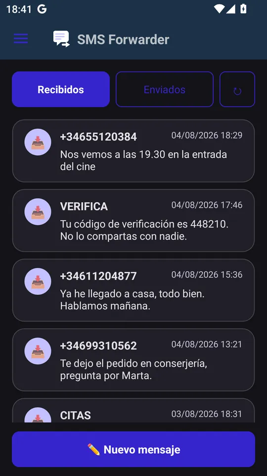
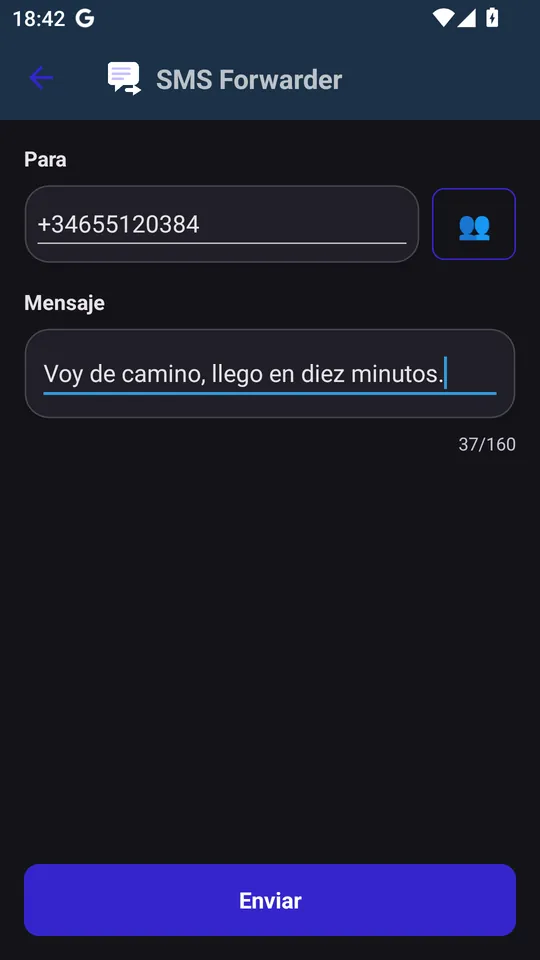
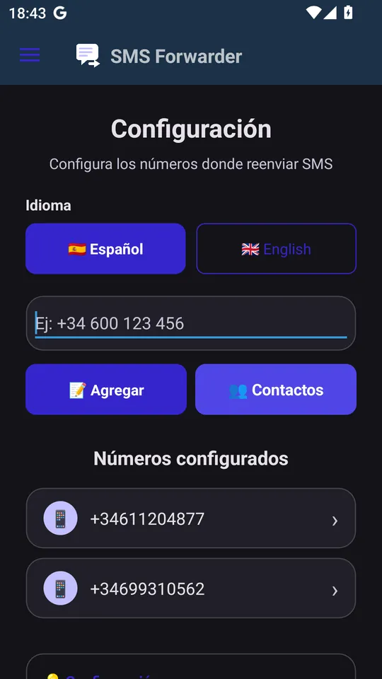
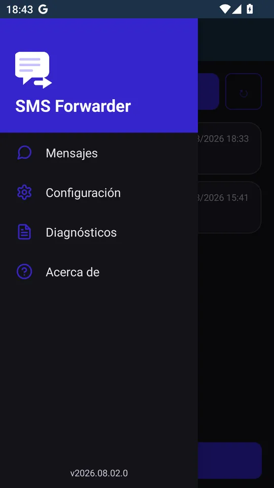

Support · SMS Forwarder
How SMS Forwarder works, screen by screen, and what every option does.
In this guide




The app doesn't ask for access to your contacts: when you pick a contact, the system picker opens and only passes along the number you choose.
Multi-select mode
Header "Settings — Configure the numbers to forward SMS".
The number appears at the top. Everything is saved instantly, with no save button.
Header "Diagnostics — System monitoring and status".
Check, in this order: that SMS Forwarder is your default SMS app (if it isn't, you'll see the notice with the Set as default button in Messages); that there's at least one number in Settings › Configured numbers; that the SMS meets that destination's conditions (tap the number to see them); and that in Diagnostics the permissions show as granted and the app is excluded from battery saving and has autostart enabled. The Activity log tells you whether the message was forwarded or why not.
That's the manufacturer's battery saving. In Diagnostics, tap Battery and Autostart (or Configure all permissions) and turn on whatever it tells you to.
Android only allows the default SMS app to do that. Tap Set as default on the Messages screen.
Automatic forwarding sends a single 160-character SMS, with the header "[SMSForwarder] De: sender"; if the original text doesn't fit, it's cut and ends with "...". To send a long message in full, open it and use Forward, which lets you send the whole thing.
That's the loop protection: SMS coming from one of your destination numbers aren't forwarded, and neither are those that already look like a forward (starting with "[SMSForwarder]", "From:", "Forwarded:" and the like). This stops two phones from forwarding messages to each other endlessly.
Each forward is a regular SMS sent from your line, so it costs whatever your carrier charges for SMS.
It has to have between 7 and 15 digits. You can enter it with or without the country code and with spaces.
Swiping no longer deletes: use the trash can button on each row, or multi-select mode to delete several messages at once.
Open an issue on GitHub telling us what's happening, with which version and device.